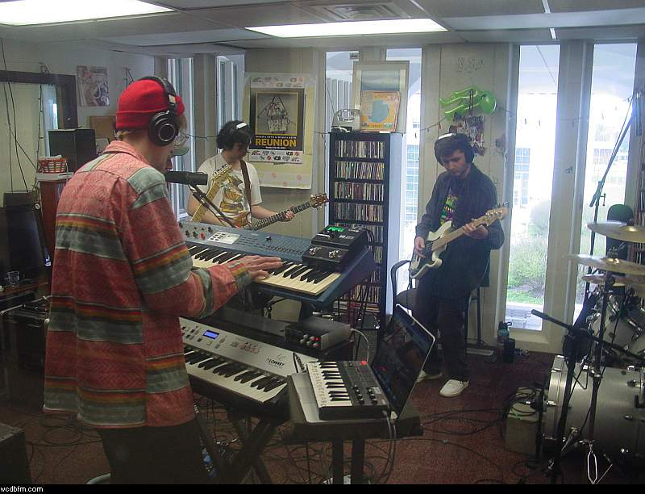

Photo · Ada OkonkwoSix hours in Studio B with The Last Miller
The band arrived at ten with two amps and a broken pedalboard. What came out of it was the best live session we have recorded in that room.
Studio B has a reputation among people who have recorded in it. The room is too live, the headphone amp hums, and the only clock is a wall unit that has been eleven minutes fast since 2019. None of that is why bands ask for it.
They ask for it because the desk is a 1978 Soundcraft that nobody has been allowed to replace, and because the drum booth — which is really a stairwell with a door on it — does something to a snare that three generations of engineering students have failed to reproduce anywhere else in the building.
The first take
We got the first take at 11:40, before anyone had settled in, and spent the next four hours failing to beat it. This happens more often than any engineer will admit.
You can hear the room deciding what the song is about. That is not something you can add afterwards.
By two the pedalboard had been diagnosed — a cold solder joint on the expression jack, fixed with a borrowed iron — and the band played the whole set through twice more for the tape.
What we kept
Four songs, all from the first two hours. They go out on Late Modernism this Thursday at 11pm, and the whole session will sit in the archive after that.
Keep reading
Drop us your email.
Once-a-month dispatch from the studio — new shows, upcoming events, the occasional pledge drive.
- Live stream
- Schedule
- Recent spins
- Shows
- About
- Pledge
- Volunteer
- Contact